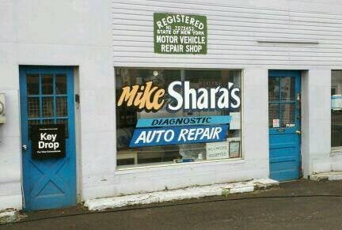

2900 Watson Blvd · Endwell, NY
Diagnostic Auto Repair & NYS Inspections
Your neighborhood repair shop on Watson Boulevard. Placeholder tagline – confirm

Open
Mon–Fri 7–6
NYS
Inspection Station
Registered
NYS Repair Shop
Key drop
At the door
Services
The first three are confirmed by the shop's own signage and New York State DMV records.
-
Diagnostics
Check engine lights, warning lights, and problems that are hard to pin down.
-
General Auto Repair
Repairs and maintenance at a Registered NYS Motor Vehicle Repair Shop.
-
NYS Inspections
Licensed NYS DMV Public Inspection Station.
-
Oil Changes
Listed as a highlight on the shop's Google listing.
confirm -
Brakes
Service details to come.
Placeholder – confirm -
More services
Add the shop's own list here (for example A/C, batteries, belts, suspension).
Placeholder – confirm
A registered Endwell repair shop
Mike Shara's Auto Repair is on Watson Boulevard in Endwell. New York State DMV records list it (operated by Shara Enterprises LLC) as a Registered Repair Shop and a Public Inspection Station at this address since 1996. confirm
Owner/mechanic: Mike Shara. confirm
Placeholder A short note in the shop's own words can go here: how long they've been on Watson Blvd, what they like to work on, and how to book.
- Registered NYS Motor Vehicle Repair Shop
- NYS DMV Public Inspection Station
- Key drop at the shop door
- Appointments, credit and debit cards, wheelchair-accessible entrance per Google – confirm
Photos
The storefront photo is real. The other slots are waiting for the shop's own photos. Placeholder
-
The shop on Watson Blvd -
Service bays
Service bays Placeholder -
At work
At work Placeholder
Hours & directions
- Monday – Friday
- 7:00 AM – 6:00 PM
- Saturday
- Closed
- Sunday
- Closed
Hours from the Google listing. confirm
2900 Watson Blvd
Endwell, NY 13760